Mates Monday is a low-key, biweekly excuse to get out of the house and try somewhere new. Different spot every fortnight. No agenda. No group chat drama. Just good spots and good people. Blokes are notoriously bad at this sort of thing — consider this the nudge.
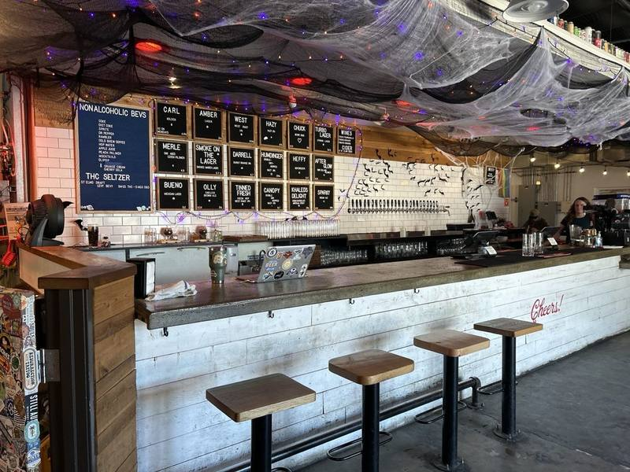
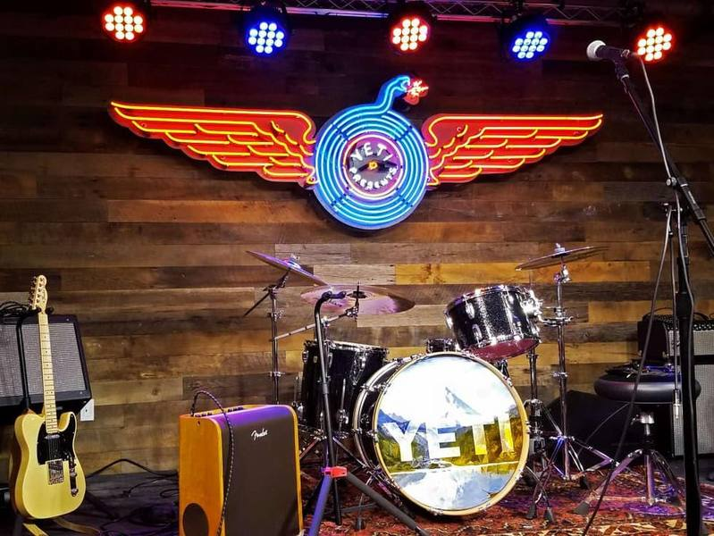
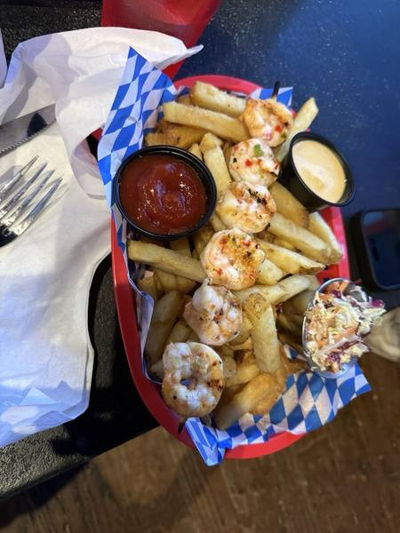
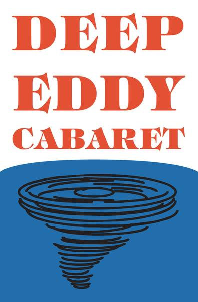
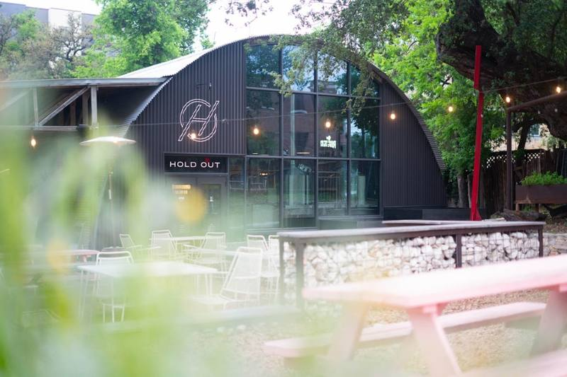
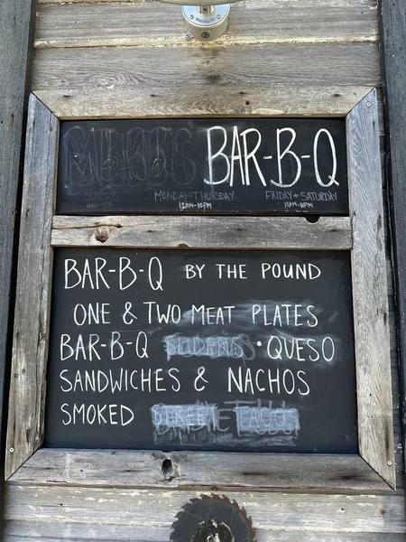
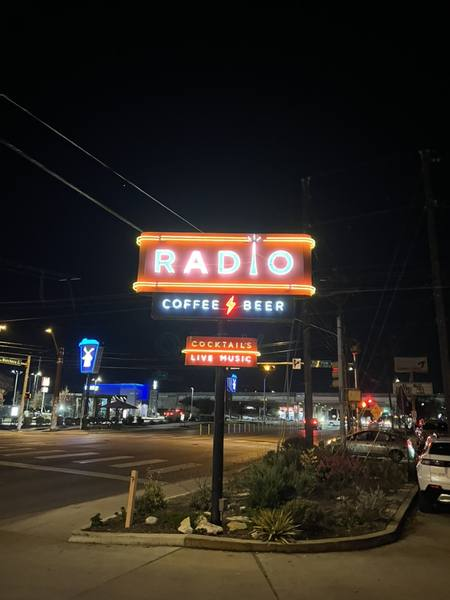
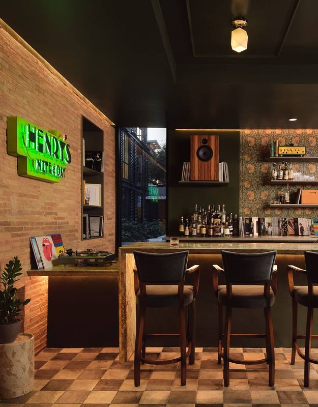
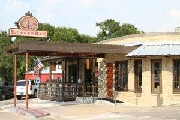
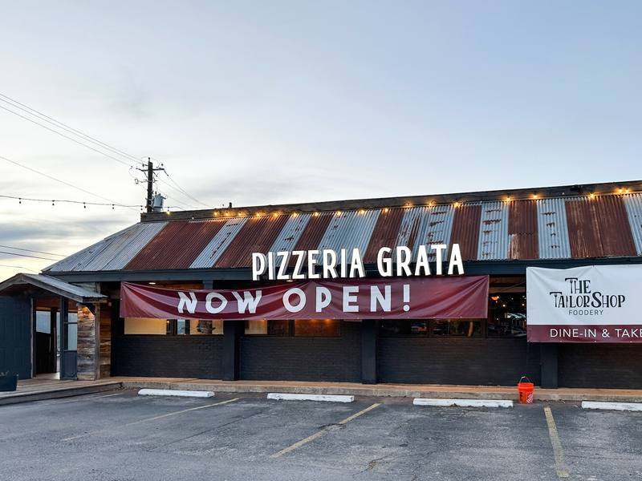
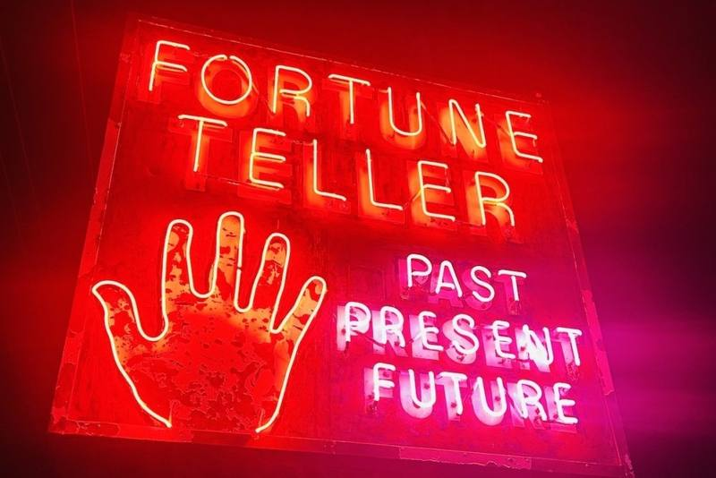
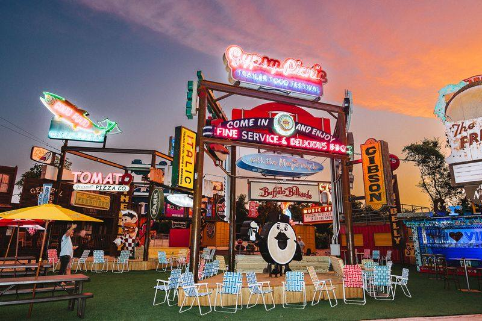